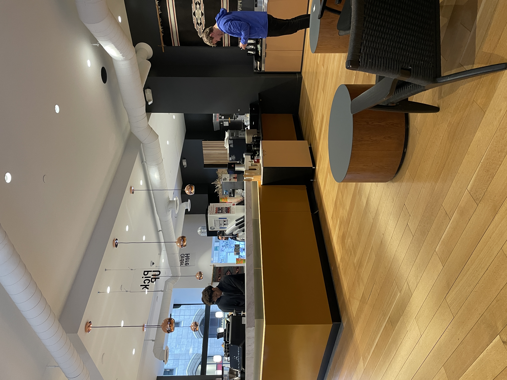
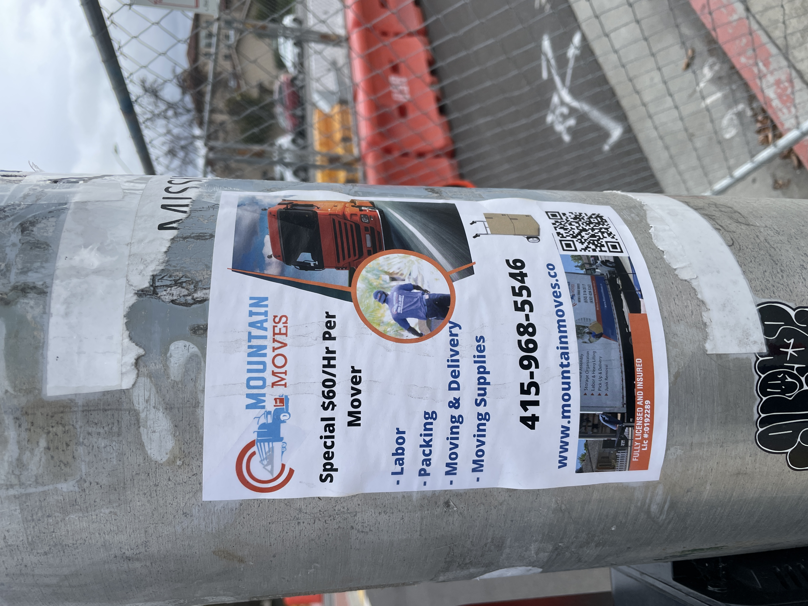
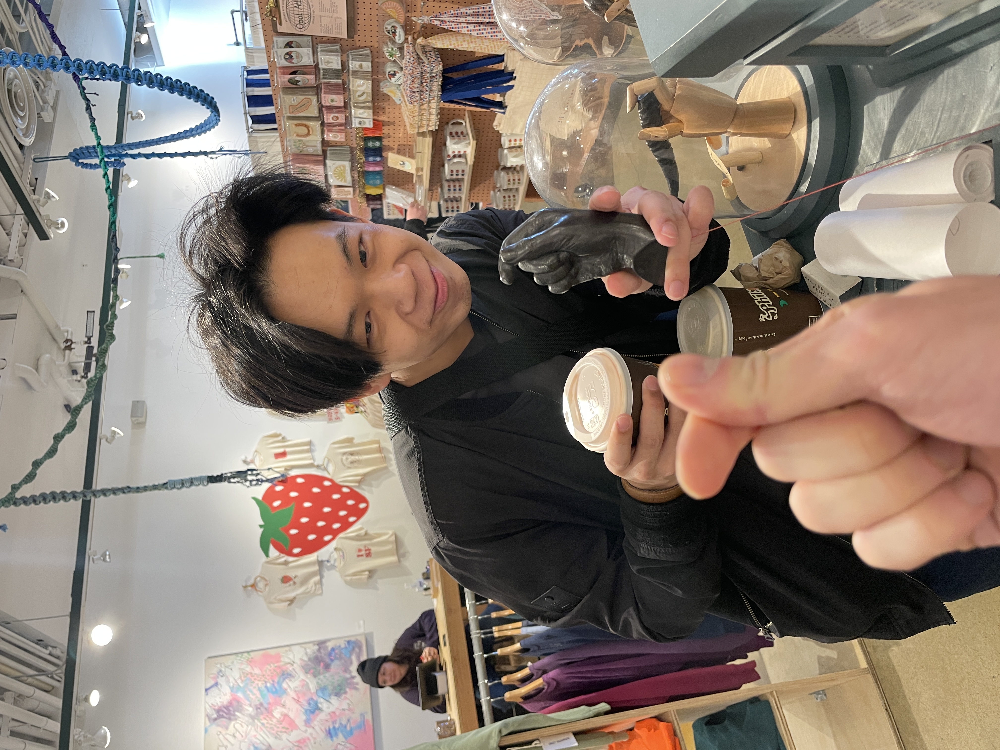

Ongoing Journey - January 2025
Minimal Level of Stress, Shifting Perspectives
SF co-working at coffee shopsPart of my confusion with parents were, they seem to never satisfy.
Whenever I achieved something they would always ask for more, finish in a faster time, do a better execution, have a more confident start etc.
Not to mention if I ended up failing, oh dear… 🙉
Which never made sense! If I do good shouldn’t I be rewarded instead of been, critiqued on less? Their metric system seems to be relative to me, that I am always competing with a perfect version of myself.
Morgan Huseel wrote in his blog ‘Minimal Level of Stress’
In the absence of big problems, people shift their worries to smaller ones. In the absence of small problems, they focus on petty or even imaginary ones.
Which explains the relativity part from parents. So the logical step forward should be developing my own metric systems, one that’s unfazed by others.
In MBTI that part of the work is called Fi which i get to learn? Took a note to learn more about it
Motivations
Fuled with motivations after seen the adCont. on the topic, asked myself deeper towards ‘motivation’, something intersting: I am often externally motivated, aka I gain more motivations ‘doing something for others’ instead of ‘doing something for myself’.
Back in school the two best performing jobs I did were 15-112 TA and UXA / P@, both of which I was doing something for others, my student, the club.
Makes me wonder, now that I graduated, what are the ways for me to be externally motivated? And more, Crystal once talked about exageerating part of feeling she likes about the project to gain motivation, aka piano lesson boring but getting certified good, so amplifies the wants of certification to continue learning.
Can I do the same?
Explore vs. Maintain
Friend coming over to SF for a visit! Hope you enjoyed the stay 👋A co-worker at the office started his online master. In the US you get redued fees in softwares if you sign up with your student account, a year of Amazon Prime for free, Spotify, Disney +, Netflix with reduced fees, etc.
I remembered intentionally used none of it lol.
It was a sense of insecurity. Back then I feared that I will get attached to these services and then the moment I graduate, the jobless Sean will no longer be able to pay of these, and then he go broke and dies on the street one day in poverty :/
Pessmestic thinking right, continuing on this trend: I hate ‘pay in X term’ services.
I did a 4 term pay once and had this false sense of security that I was only paying 1/4 the price for the good, ended up spending more, never used it again.
Something I learned about myself - I can only see the resources I have right now, and I tend to be quite terrible in terms of planning.
An ongoing internal debates, the balance between explore / maintain.
虚荣心
My parents were really happy I chose swimming back in high school, to them it’s the safest of sport. You can hardly get hurt in water, and you aren’t competing with anyone but yourself.
Three years later both were proven wrong lol, I learned water can be dangerous without care, and I get the most ego not when competing with others, but with myself.
I no longer swim but I now head to gym, in gym there is also this term called ‘ego lifting’, means you lift heavy weight which caused you to lose form, aka too heavy.
If it became a term it must’ve been common among lifters, thinking back to the parents’ metric, makes me wonder if we turned away from one harm and simply replaced the pepetrator with ourselves.
Felt jealous of Steven sometimes. Guy has such a kind heart and a muscular body, must never had a ego breakd
…right :D
6283
 Chicken on strike
Chicken on strike
With high Fe I tend not to get feelings towards folks, so it was pretty funny when I felt dislike, well, for the sake of this conversation, let’s mark it as 6283
6283 is, well rounded at the surface, but 6283 felt empty. With a few conversation you would realize the act learned is without understanding, and the things that you notice stops the moment you try to dig a bit deeper.
I was intruged. For the first time I sat down, starred at the empty Obsidian doc named
‘People I hate’
…
然后我发现，喜欢的人千篇一律，不喜欢的人倒是万里挑一
They are so different and so unique, even more than the folks that I felt affection to lol. There was almost a sense of 惺惺相惜 after I was done, I was sad to see them go.
I tried breaking down 6283, the characteristics and where the feelings were evoked elsewhere.
Wrote down many: 2564 is arrogant, thinks he is correct 100% of the time. 1218 is shallow, often lingers around the surface in converstaions, etc.
I found that these characters individually it causes no thoughts, but specifically when it’s combined it seems to stir a chemical reaction, and then the sudden realization:
The dislike I have towards 6283, is the feeling I have towards myself.
…
Isn’t it interesting, most I’ve seen hate themselves become others, where I hate to see others been myself. I wonder what caused the difference.
识人杰
Dad’s favorite part of the history gets to do with 刘邦项羽, he looks ups with 刘 quite a bit, often telling me to learn to identify the ‘stars in the room’
But how does one do that lol, the one that I was taught - for any folks, look at their achievement and think: keeping all other constants the same, can I do it as good given 10x the time? If the answer is no, then the person likly is a star in the room.
I learned and I did find some scattered in my life, and then the question arose: how do I get closer to them?
I learned this from Nancy, don’t be the best, be the only. When you also have unique values, you worry much less about how to attract others towards you.
Then how can you do something different than others? Recently saw on X someone commenting’s on Paul Graham’s trick to do work:
I hate how well asking myself ‘if I had 10x the agency I have what would I do’ works.
TLDR, in order to do great works, ask yourself what you would do if you are a star in the room yourself, and then go do it.
…
Intersting right, 如果你想成为刘邦，你必须先成为项羽
想起我之前看到的鸡汤文
最好的贵人，是努力的自己